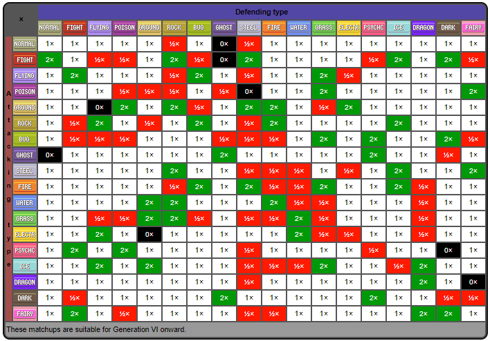

Todos os pokémons tem um ou mais tipos, e cada ataque também possui um tipo. Esses tipos servem para ditar as características do pokémon e de seus ataques, o que ajuda a categorizar os pokémons em diversos tipos e também os ginásios, que são locais dentro desse mundo onde os treinadores podem obter uma insígnia se derrotarem os treinadores do ginásio, ganhando assim uma medalha daquele ginásio.
Existem 18 tipos de pokémon: água, fogo, planta, gelo, inseto, normal, venenoso, elétrico, terra, lutador, psíquico, pedra, voador, fantasma, dragão, metálico, noturno e fada. Os tipos também servem para definir o dano e defesa dos pokémons durante as batalhas, e o dano do ataque de X tipo em Y tipo de pokémon pode ser representado pela tabela a seguir:
